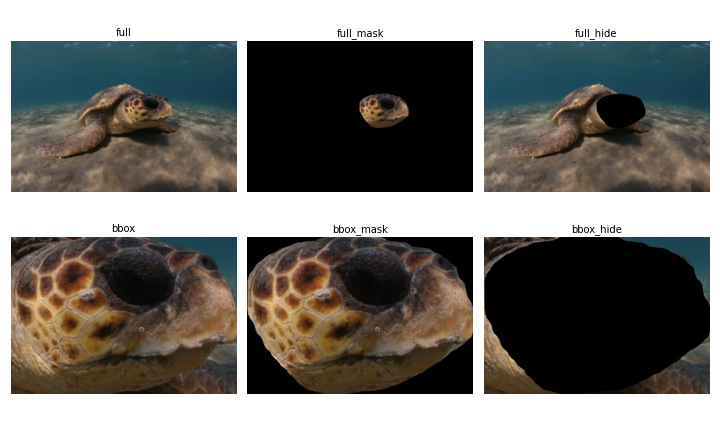

WildlifeDataset class
The class WildlifeDataset is the core of the WildlifeDatasets package. It has implemnted the attributes __len__ and __getitem__, which means that it can be directly used with pytorch. It also means that individual images can be accessed by indexing the class.
from wildlife_datasets.datasets import MacaqueFaces, SeaTurtleID2022
root = 'data/MacaqueFaces'
dataset = MacaqueFaces(root)
dataset[0]
This automatically loads the image at the zeroth position.
dataset.df.iloc[0]
image_id 0
identity Dan
path MacaqueFaces/Contrast/Dan/Macaque_Face_1.jpg
date 2014-07-03
category Contrast
Name: 0, dtype: object
Loading identities
We can load the identities by providing load_label=True.
dataset = MacaqueFaces(root, load_label=True)
dataset[0]
(<PIL.Image.Image image mode=RGB size=100x100 at 0x7F6C1A2DBA50>, 'Dan')
Sometimes it is necessary to have the labels converted into numerical values. For this, use factorize_label=True.
dataset = MacaqueFaces(root, load_label=True, factorize_label=True)
dataset[0]
(<PIL.Image.Image image mode=RGB size=100x100 at 0x7F6C1A2C1610>, np.int64(0))
Loading bounding boxes
Multiple datasets, such as SeaTurtleID2022, contain bounding boxes and segmentation masks. Then it may be advantageous to load the cropped images. This is done by providing the img_load keyword.
dataset = SeaTurtleID2022('data/SeaTurtleID2022', img_load='bbox')
dataset[0]
The following grid figure shows the possible outcomes of the keyword.

Applying transforms
The first image has 100x100 pixels.
dataset = MacaqueFaces(root)
dataset[0].size
(100, 100)
When a transformation, such as resizing images or converting it to a torch tensor, is needed, use the transform keyword. This example resizes the original image from 100x100 to 200x200 pixels.
transform = lambda x: x.resize((200, 200))
dataset = MacaqueFaces(root, transform=transform)
dataset[0].size
(200, 200)